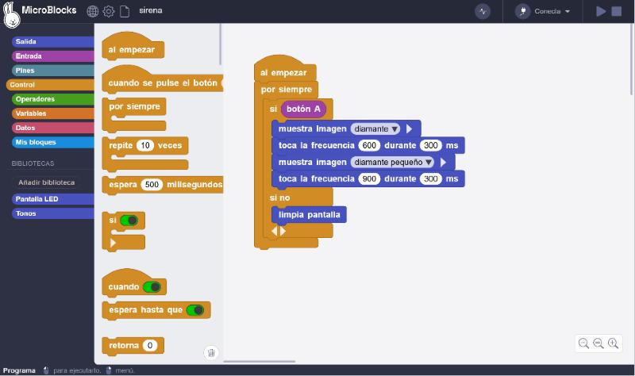

Inicio › Conoce micro:bit › Los editores
MicroBlocks
MicroBlocks es un lenguaje de bloques libre y gratuito, parecido a Scratch, que funciona con la micro:bit y con muchas otras placas. Se usa en el navegador (Chrome o Edge) o como aplicación para Windows, macOS, Linux y Chromebook.

1CategoríasSalida, Entrada, Pines, Control, Operadores, Variables, Datos y Mis bloques, cada una con su color.2BibliotecasLas bibliotecas cargadas (aquí Pantalla LED y Tonos) y el botón «Añadir biblioteca».3PaletaLos bloques de la categoría elegida. Se arrastran al área de guiones.4Área de guionesAquí se montan los programas. Haz clic en un guion para ejecutarlo en la placa.5Idioma, ajustes y archivoEl globo cambia el idioma; el engranaje tiene la actualización de firmware; la hoja abre y guarda proyectos.6GráficaMuestra en directo los valores enviados con el bloque «añade al gráfico».7ConectaConecta la placa por USB o Bluetooth. Se pone verde al conectar.8Iniciar y pararPone en marcha todos los guiones «al empezar» o los detiene.- 1CategoríasSalida, Entrada, Pines, Control, Operadores, Variables, Datos y Mis bloques, cada una con su color.
- 2BibliotecasLas bibliotecas cargadas (aquí Pantalla LED y Tonos) y el botón «Añadir biblioteca».
- 3PaletaLos bloques de la categoría elegida. Se arrastran al área de guiones.
- 4Área de guionesAquí se montan los programas. Haz clic en un guion para ejecutarlo en la placa.
- 5Idioma, ajustes y archivoEl globo cambia el idioma; el engranaje tiene la actualización de firmware; la hoja abre y guarda proyectos.
- 6GráficaMuestra en directo los valores enviados con el bloque «añade al gráfico».
- 7ConectaConecta la placa por USB o Bluetooth. Se pone verde al conectar.
- 8Iniciar y pararPone en marcha todos los guiones «al empezar» o los detiene.
Sus cuatro ideas clave
En vivo
No hay que descargar nada: cada cambio se envía a la placa al instante. Haz clic en un bloque y se ejecuta.
Multitarea
Varios guiones funcionan a la vez sin estorbarse: uno anima la pantalla mientras otro vigila un botón.
Autónomo
El programa queda guardado en la placa y sigue funcionando al desconectarla del ordenador.
Portátil
Los mismos bloques sirven para otras placas, como Calliope mini o ESP32.
Un ejemplo con tres guiones a la vez
El primero hace latir un corazón, el segundo escribe «Hola» al pulsar A y el tercero pita cuando tapas la pantalla. Funcionan a la vez:
Categorías
| Categoría | ¿Qué contiene? | Ejemplo |
|---|---|---|
| Salida | Pantalla de LED, texto en movimiento, LED integrado. | pantalla |
| Entrada | Botones, cronómetro, sensores de la placa (inclinación, luz, temperatura…). | dibotón A |
| Pines | Leer y escribir pines digitales y analógicos. | pon pin digital0a |
| Control | Eventos (al empezar, cuando se pulse el botón…), bucles, esperas, si… | al empezar |
| Operadores | Operaciones, comparaciones, azar, y/o/no. | dinúmero al azar entre1y10 |
| Variables | Crear variables, asignarles valor y aumentarlas. | aumentaen1 |
| Datos | Listas y textos. | diunemicrobit |
| Mis bloques | Bloques propios hechos por ti. |
Bibliotecas
Muchos bloques están en bibliotecas. Con la micro:bit se cargan solas las básicas (como Pantalla LED), y el resto se añade con Añadir biblioteca, bajo la lista de categorías. Las más útiles con la micro:bit son Tone (notas musicales), Radio, Microphone (sonido y palmadas), TouchPin (logotipo y pines táctiles), Servo y NeoPixel. Los proyectos de este material ya llevan dentro las bibliotecas que necesitan.
Ver los valores en directo
El bloque di muestra un globo con el valor que le pongas, y gráfica dibuja los datos de un sensor en tiempo real. Son perfectos para explorar sensores antes de programar.